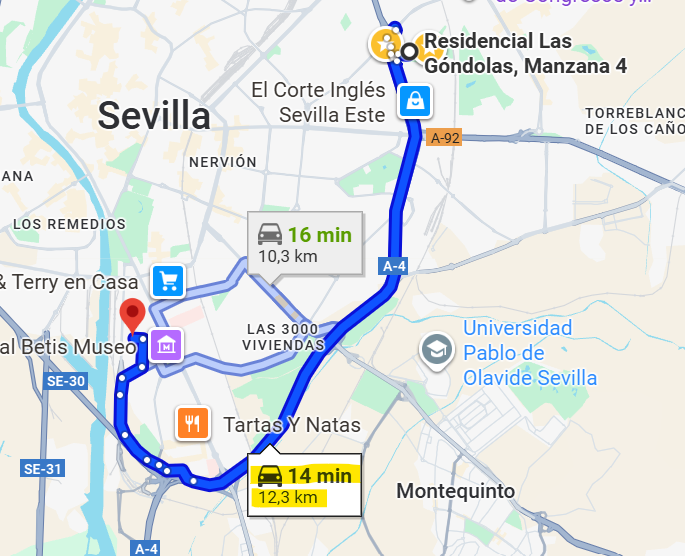
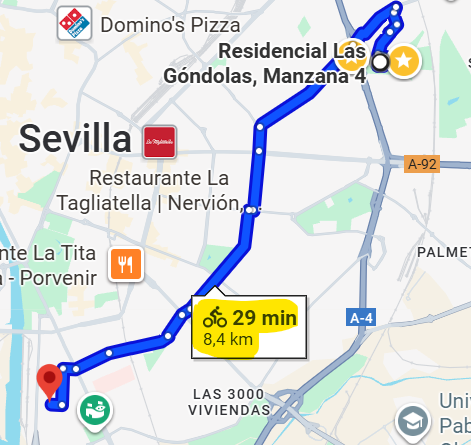
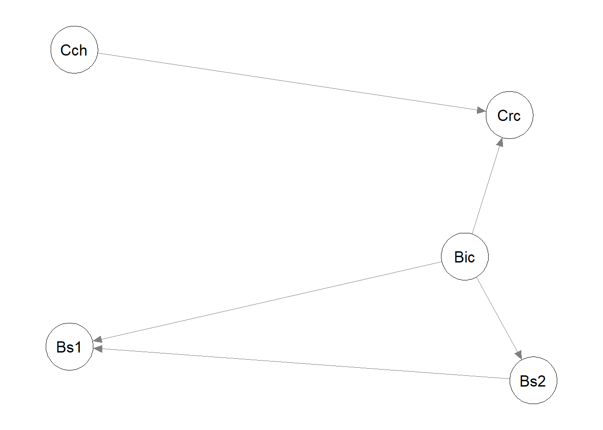
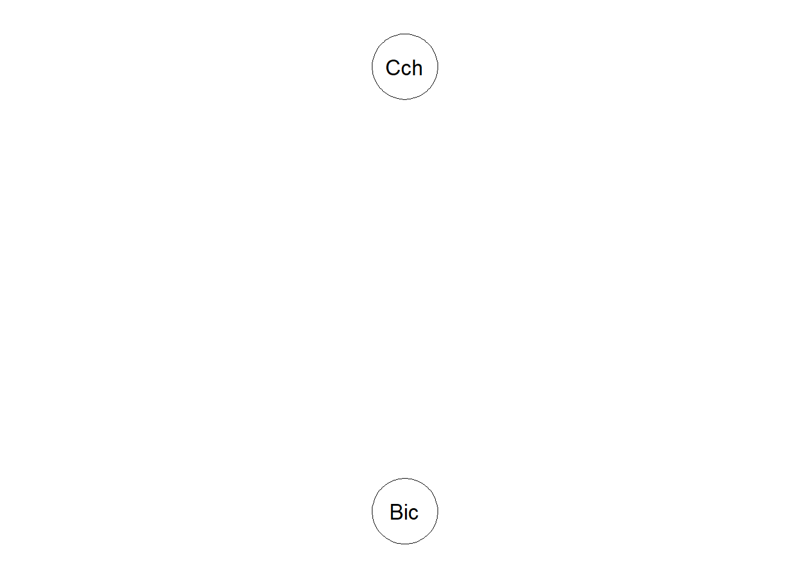
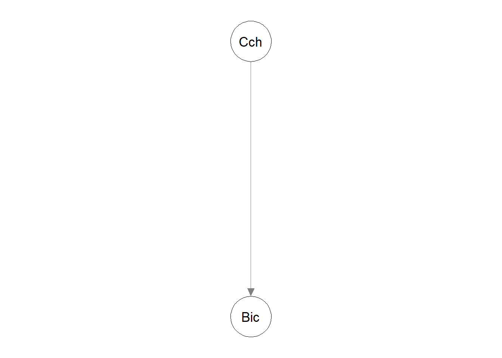
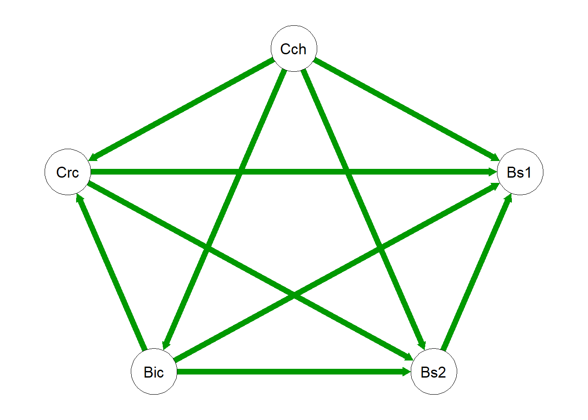
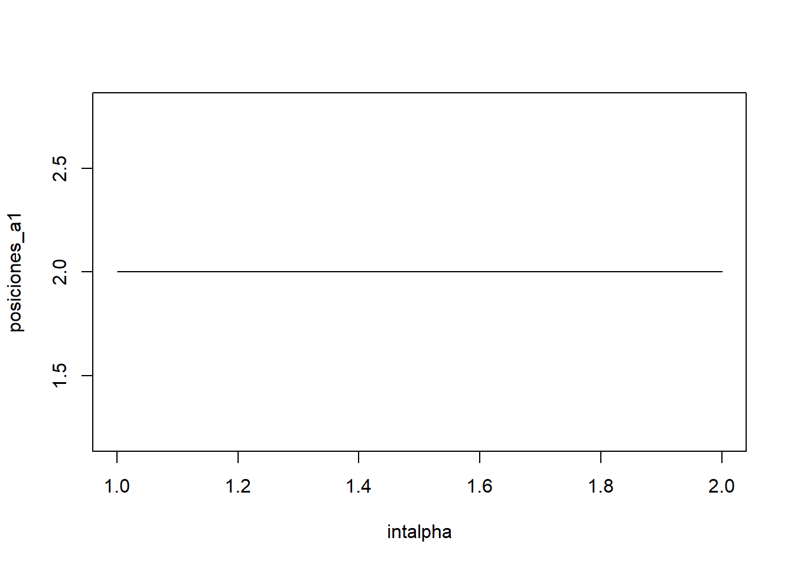

datos = Load("transporte.ahp")
Visualize(datos)Selección del mejor medio de transporte para ir a la universidad
1 Presentación y motivación del problema.
La mayoría de los alumnos que no residen en el campus de Reina Mercedes se enfrentan, especialmente durante su primer año de universidad, al mismo dilema: cómo desplazarse cada día a la facultad de la forma más eficiente posible. La elección del medio de transporte no es un problema poco importante, ya que condiciona la puntualidad, el cansancio acumulado, los gastos mensuales e incluso el aprovechamiento del tiempo durante la jornada.
Este también fue mi caso cuando comencé la carrera. Aunque un poco tarde, es ahora cuándo voy a poder resolverlo. Vivo en Sevilla Este, concretamente en la urbanización Las Góndolas, una zona bien comunicada pero algo alejada de la Facultad de Matemáticas, situada en el campus de Reina Mercedes.
De lunes a viernes debo realizar este trayecto, y con el tiempo he probado prácticamente todas las alternativas disponibles: coche, autobús (en diferentes combinaciones), bicicleta e incluso cercanías combinadas con un tramo a pie. Sin embargo, todas presentan alguna desventaja importante.
Ante esta situación, he decidido analizar el problema desde un enfoque formal, aplicando métodos de decisión multicriterio para determinar, de manera objetiva y cuantitativa, cuál es la opción más adecuada considerando simultáneamente factores como tiempo, coste, comodidad, puntualidad y sostenibilidad ambiental. De este modo, este trabajo no solo busca resolver una necesidad personal, sino también ilustrar cómo la teoría de la decisión puede emplearse para abordar problemas cotidianos y relevantes para muchos estudiantes.
2 Presentación de los criterios.
- Tiempo de viaje
Este criterio representa la duración total del desplazamiento desde mi casa hasta la facultad, incluyendo posibles esperas, transbordos y problemas de tráfico. Es un factor fundamental, ya que condiciona mi organización diaria y también las horas de sueño. Se medirá en minutos por trayecto y mi objetivo es minimizarlo.
- Coste
El coste engloba todos los gastos asociados al trayecto de ida y de vuelta. Se tendrán en cuenta el precio del billete de transporte público, el combustible y posibles pagos para el aparcamiento. Este criterio es especialmente relevante para mi ya que una opción demasiado cara puede resultar insostenible a largo plazo. Se medirá en euros y mi objetivo es minimizarlo.
- Comodidad
Mide el grado de bienestar físico durante el trayecto, así como a las condiciones del entorno y el esfuerzo necesario para realizarlo. He decidido desglosarlo en 2 subcriterios:
Espacio personal disponible y esfuerzo: si dispongo de espacio suficiente para viajar sentada o sin estar apretada y si supone mucho esfuerzo ese medio.
Temperatura y condiciones meteorológicas: Combina la valoración del nivel de temperatura dentro del medio de transporte con la exposición a las condiciones meteorológicas externas, como lluvia, viento o calor intenso. Este subcriterio es especialmente relevante en Sevilla, donde hay altas temperaturas en verano.
Para este criterio, voy a usar escalas subjetivas utilizando puntuaciones del 1 al 10. En el primer caso, 1 = viaje muy apretado e incomodo, 10 = siempre sentado y amplio y en el segundo subcriterio, 1 = mala adaptabilidad a condiciones de lluvia y calor, 10 = mejor temperatura posible y sin problemas con el tiempo. Mi objetivo es maximizarlo.
- Puntualidad.
Mediré la capacidad del medio de transporte para cumplir los horarios previstos y mantener una regularidad en los desplazamientos. Un transporte puntual y predecible me permite mantener la planificación diaria y llevar una buena rutina de horarios. De nuevo, se medirá con una subjetiva, siendo 1: puntualidad mala y 10: siempre puntual. Mi objetivo es maximizarlo.
- Sostenibilidad ambiental
Este criterio evalúa el impacto ecológico de cada medio de transporte de forma práctica y directa, considerando factores que afectan al entorno urbano y al bienestar colectivo. En lugar de medir emisiones exactas, utilizaré una escala de valoración de 1 a 10, donde 1 indica un alto impacto negativo y 10 indica una alternativa muy sostenible. Mi objetivo también es maximizarlo.
3 Presentación de las alternativas.
- Coche.
La opción más rápida para ir en coche es coger la SE-30 y llegar por la Avenida de las Razas. El tiempo de viaje es un poco variado. En una situación ideal y sin tráfico, el tiempo de viaje es de unos 15 minutos. Sin embargo, por las mañanas suele haber bastante tráfico así que consideraré una media de 23 minutos.
En cuanto al coste, tendré en cuenta dos factores. En primer lugar la gasolina. El precio de la gasolina ronda en unos 1.4 €/l en el Carrefour. Mi coche es un Toyota Corolla verso del 2002, que tiene un consumo de 7.4l/100km.. Mi recorrido en coche es de 12.3 km. Por tanto, en gasolina, el precio es de 1.27€. Además, tendré en cuenta que en alguna ocasión, hay que pagar el parking por no encontrar aparcamiento. Añado 2.5 euros por semana, es decir, 0.25€ por trayecto. En total, ir un día a la universidad tiene un coste de 3.04€.
Sin duda, es la opción más cómoda ya que permite viajar sentado, con climatización y privacidad. Sin embargo, la puntualidad no siempre es constante, debido a los atascos frecuentes en las horas punta de entrada y salida de Sevilla. Desde el punto de vista de la sostenibilidad ambiental, es la alternativa menos favorable.

- Autobús. Combinación LE-02.
Esta opción requiere realizar una combinación de las líneas LE y 02 de Tussam. Aproximadamente el trayecto tiene una duración de 55 minutos, pero debemos tener en cuenta que en ocasiones hay que esperar entre uno y otro. Consideramos el tiempo del trayecto de 1h.
El precio de cada billete es de 0.46€ considerando el caso de transbordo, por lo que a pesar de tener que coger dos autobuses, se paga solo en uno.. Ir un día a la universidad tiene un coste de 0.92€.
La comodidad es bastante inferior, ya que suelen ir bastante llenos en horas puntas o incluso pasar completos y la puntualidad también mejorable porque no tienen un horario fijo. En términos de sostenibilidad ambiental, es una buena opción al transportar a varios pasajeros y reducir el número de vehículos individuales en circulación.
- Autobús. Combinación TB1-LS.
Opción muy parecida a la anterior. Implica una combinación del nuevo “tranvibus” y la linea de autobús LS. La duración del trayecto es de unos 55 minutos y el coste es de 0.92€. La comodidad es buena ya que a pesar de ser transporte público son líneas mucho menos frecuentadas y con menos aglomeraciones. La puntuabilidad también es mejor por el mismo motivo. Misma valoración en cuanto a la sostenibilidad.
- Bicicleta
El desplazamiento en bicicleta presenta una duración aproximada de 29 minutos, sin depender del tráfico ni tener que esperar colas. El coste diario es prácticamente nulo. En cuanto a comodidad, la valoración es muy baja: aunque ofrece autonomía y flexibilidad, puede resultar cansado en días de calor y no es viable en días de lluvia. Además requiere cierta preparación física. La puntualidad es alta, ya que el tiempo de llegada es estable y predecible. Desde el punto de vista de la sostenibilidad ambiental, la bicicleta es siempre la mejor opción, al no generar emisiones y promover un transporte limpio y saludable.

- Cercanías + caminar.
Esta opción combina el uso del cercanías y un tramo a pie hasta la facultad. Se coge la línea C4 en la estación “Palacio de Congresos” hasta “Virgen del Rocío”. Este trayecto dura 14 minutos.. El tiempo caminando hasta la facultad es de 16min. Sin embargo, el trayecto de vuelta es diferente porque el cercanias es circular y el camino de “Virgen del Rocío” hasta “Palacio de Congresos” es de tan solo 8 minutos. Para considerar ambos, hago la media . Por tanto, el trayecto a la universidad es de 35 minutos considerando esperas (11 tren + 16 a pie + 8 espera). El coste diario es de 3.60€. .
La comodidad es buena ya que los trenes suelen tener asientos, climatización y un trayecto estable pero la puntualidad del cercanías es muy mala porque a pesar de tener horario fijo, siempre se retrasa. La sostenibilidad también es buena.
4 Comparaciones por pares.
Realizamos las tablas de comparaciones teniendo en cuenta la previa descripción de cada una de las alternativas.
- Matriz de comparación de criterios
| Tiempo | Coste | Comodidad | Puntualidad | Sostenibilidad | |
|---|---|---|---|---|---|
| Tiempo | 1 | 3 | 2 | 4 | 8 |
| Coste | 1/3 | 1 | 1/2 | 1/3 | 6 |
| Comodidad | 1/2 | 2 | 1 | 2 | 8 |
| Puntualidad | 1/4 | 3 | 1/2 | 1 | 5 |
| Sostenibilidad | 1/8 | 1/6 | 1/8 | 1/5 | 1 |
- Matrices de comparación de los subcriterios de Comodidad.
| Espacio Personal | Condiciones Meteorológicas | |
|---|---|---|
| Espacio Personal | 1 | 1/3 |
| Condiciones Meteorológicas | 3 | 1 |
- Matriz de comparación dentro de Tiempo.
| Coche propio | Bus LE+02 | Bus TB1+LS | Bicicleta | Cercanías | |
|---|---|---|---|---|---|
| Coche propio | 1 | 8 | 7 | 3 | 5 |
| Bus LE-02 | 1/8 | 1 | 1/2 | 1/7 | 1/6 |
| Bus TB1+LS | 1/7 | 2 | 1 | 1/6 | 1/5 |
| Bicicleta | 1/3 | 7 | 6 | 1 | 3 |
| Cercanías | 1/5 | 6 | 5 | 1/3 | 1 |
- Matriz de comparación dentro de Coste.
| Coche propio | Bus LE+02 | Bus TB1+LS | Bicicleta | Cercanías | |
|---|---|---|---|---|---|
| Coche propio | 1 | 1/6 | 1/6 | 1/8 | 3 |
| Bus LE-02 | 6 | 1 | 1 | 1/3 | 7 |
| Bus TB1+LS | 6 | 1 | 1 | 1/3 | 7 |
| Bicicleta | 8 | 3 | 3 | 1 | 9 |
| Cercanías | 1/3 | 1/7 | 1/7 | 1/9 | 1 |
- Matriz de comparación dentro de Espacio Personal y esfuerzo.
| Coche propio | Bus LE+02 | Bus TB1+LS | Bicicleta | Cercanías | |
|---|---|---|---|---|---|
| Coche propio | 1 | 6 | 5 | 9 | 7 |
| Bus LE-02 | 1/6 | 1 | 1/2 | 6 | 3 |
| Bus TB1+LS | 1/5 | 2 | 1 | 8 | 4 |
| Bicicleta | 1/9 | 1/7 | 1/8 | 1 | 1/5 |
| Cercanías | 1/7 | 1/3 | 1/4 | 5 | 1 |
- Matriz de comparación dentro de Condiciones Metereologicas.
| Coche propio | Bus LE+02 | Bus TB1+LS | Bicicleta | Cercanías | |
|---|---|---|---|---|---|
| Coche propio | 1 | 7 | 7 | 9 | 8 |
| Bus LE-02 | 1/7 | 1 | 1 | 5 | 2 |
| Bus TB1+LS | 1/7 | 1 | 1 | 5 | 2 |
| Bicicleta | 1/9 | 1/5 | 1/5 | 1 | 1/6 |
| Cercanías | 1/8 | 1/2 | 1/2 | 6 | 1 |
- Matriz de comparación dentro de Puntualidad.
| Coche propio | Bus LE+02 | Bus TB1+LS | Bicicleta | Cercanías | |
|---|---|---|---|---|---|
| Coche propio | 1 | 4 | 3 | 1/3 | 6 |
| Bus LE-02 | 1/4 | 1 | 1/2 | 1/6 | 2 |
| Bus TB1+LS | 1/3 | 2 | 1 | 1/5 | 3 |
| Bicicleta | 3 | 1/6 | 5 | 1 | 8 |
| Cercanías | 1/6 | 1/2 | 1/3 | 1/8 | 1 |
- Matriz de comparación dentro de Sostenibilidad ambiental.
| Coche propio | Bus LE+02 | Bus TB1+LS | Bicicleta | Cercanías | |
|---|---|---|---|---|---|
| Coche propio | 1 | 1/5 | 1/5 | 1/7 | 1/6 |
| Bus LE-02 | 5 | 1 | 1 | 1/3 | 1/4 |
| Bus TB1+LS | 5 | 1 | 1 | 1/3 | 1/4 |
| Bicicleta | 7 | 3 | 3 | 1 | 3 |
| Cercanías | 6 | 4 | 4 | 1/3 | 1 |
5 Método AHP
5.1 Resolución con la librería AHP
Cargo el modelo y visualizo la jerarquía.
Analizar.
Calculate(datos)
t1 = AnalyzeTable(datos, sort = "orig")
formattable::as.htmlwidget(t1)t2 = AnalyzeTable(datos, variable = "priority", sort = "orig")
formattable::as.htmlwidget(t2)
Conclusiones :
Viendo la primera tabla se observa que la alternativa de ir a la facultad en coche es la opción, con diferencia, más valorada globalmente, con un peso del 41,7%, seguida por la bicicleta (28,2%). El resto de alternativas, presentan pesos significativamente menores, situándose en torno al 10%. Esto indica una clara preferencia hacia los medios de transporte que ofrecen mayor rapidez, autonomía y comodidad, aunque a costa de un mayor impacto económico y ambiental.
El criterio tiempo destaca como el factor más determinante en la decisión, representando más del 40% del peso total, lo que refuerza la idea de que la eficiencia temporal es prioritaria frente a otros aspectos. Tiene sentido puesto que, en mi situación personal, lo que más valoro es no perder el tiempo y poder aprovecharlo al máximo. En segundo lugar, la comodidad también tiene una influencia notable, con un 24.8%, mientras que el coste y la sostenibilidad adquieren un papel más secundario.
Por otro lado, los índices de inconsistencia son en general aceptables, ya que todos se mantienen por debajo del 10%, lo que indica coherencia en los juicios realizados.
De la tabla de pesos locales podemos ver que dentro de cada criterio, el coche y la bicicleta son los que suelen ganar y con diferencia. Por ejemplo, el coche destaca claramente en los criterios tiempo, espacio y condiciones meteorológicas, confirmando su ventaja en rapidez y la comodidad que proporciona. La bicicleta sin embargo, gana en coste, puntualidad y sostenibilidad, criterios con menor peso. El resto de alternativas no destacan notablemente en ningún criterio pues no superan ni el 20%.
5.2 Resolución con ayuda de las funciones R definidas en clase
#Criterios
n.criterios = c("Tiempo","Coste","Comodidad","Puntualidad","Sostenibilidad")
tn1 = multicriterio.crea.matrizvaloraciones_mej(c(3,2,4,8,1/2,1/3,6,2,8,5),
numalternativas = 5,
v.nombres.alternativas =
n.criterios)
stn1 = multicriterio.metodoAHP.variante1.autovectormayorautovalor(tn1)
(vpn1 = round(stn1$valoraciones.ahp,4)) Tiempo Coste Comodidad Puntualidad Sostenibilidad
0.4237 0.1207 0.2477 0.1756 0.0324 # Subcriterios Comodidad
n.subcriterios = c("Espacio y esfuerzo", "Condiciones met.")
tn2 = multicriterio.crea.matrizvaloraciones_mej(c(1/3),
numalternativas = 2,
v.nombres.alternativas =
n.subcriterios)
stn2 = multicriterio.metodoAHP.variante1.autovectormayorautovalor(tn2)
(vpn2 = round(stn2$valoraciones.ahp,4))Espacio y esfuerzo Condiciones met.
0.25 0.75 c1 = 0.4237
c2 = 0.1207
c31 = 0.2477*0.25
c32 = 0.2477*0.75
c4 = 0.1756
c5 = 0.0324
crisub = c(c1,c2,c31,c32,c4,c5)
# c1: Tiempo.
n.alternativas =
c("Coche","AutobusLE02","AutobusTB1LS",
"Bicicleta","CercaniasCaminar")
tn3c1 = multicriterio.crea.matrizvaloraciones_mej(
c(8,7,3,5,1/2,1/7,1/6,1/6,1/5,3),
numalternativas = 5,
v.nombres.alternativas = n.alternativas)
stn3c1 = multicriterio.metodoAHP.variante1.autovectormayorautovalor(tn3c1)
(vpn3c1 = round(stn3c1$valoraciones.ahp,4)) Coche AutobusLE02 AutobusTB1LS Bicicleta
0.5005 0.0347 0.0496 0.2663
CercaniasCaminar
0.1489 ## c2. Coste
tn3c2 = multicriterio.crea.matrizvaloraciones_mej(
c(1/6,1/6,1/8,3,1,1/3,7,1/3,7,9),
numalternativas = 5,
v.nombres.alternativas = n.alternativas)
stn3c2 = multicriterio.metodoAHP.variante1.autovectormayorautovalor(tn3c2)
(vpn3c2 = round(stn3c2$valoraciones.ahp,4)) Coche AutobusLE02 AutobusTB1LS Bicicleta
0.0538 0.2180 0.2180 0.4786
CercaniasCaminar
0.0316 ## c31. Espacio personal y esfuerzo
tn3c31 = multicriterio.crea.matrizvaloraciones_mej(
c(6,5,9,7,1/2,6,3,8,4,1/5),
numalternativas = 5,
v.nombres.alternativas = n.alternativas)
stn3c31 = multicriterio.metodoAHP.variante1.autovectormayorautovalor(tn3c31)
(vpn3c31 = round(stn3c31$valoraciones.ahp,4)) Coche AutobusLE02 AutobusTB1LS Bicicleta
0.5710 0.1302 0.1995 0.0281
CercaniasCaminar
0.0712 ## c32. Condiciones meterorologicas
tn3c32 = multicriterio.crea.matrizvaloraciones_mej(
c(7,7,9,8,1,5,2,5,2,1/6),
numalternativas = 5,
v.nombres.alternativas = n.alternativas)
stn3c32 = multicriterio.metodoAHP.variante1.autovectormayorautovalor(tn3c32)
(vpn3c32 = round(stn3c32$valoraciones.ahp,4)) Coche AutobusLE02 AutobusTB1LS Bicicleta
0.6290 0.1255 0.1255 0.0309
CercaniasCaminar
0.0892 ## c4. Puntualidad
tn3c4 = multicriterio.crea.matrizvaloraciones_mej(
c(4,3,1/3,6,1/2,1/6,2,1/5,3,8),
numalternativas = 5,
v.nombres.alternativas = n.alternativas)
stn3c4 = multicriterio.metodoAHP.variante1.autovectormayorautovalor(tn3c4)
(vpn3c4 = round(stn3c4$valoraciones.ahp,4)) Coche AutobusLE02 AutobusTB1LS Bicicleta
0.2575 0.0715 0.1127 0.5144
CercaniasCaminar
0.0439 ## c5. Sostenibilidad
tn3c5 = multicriterio.crea.matrizvaloraciones_mej(
c(1/5,1/5,1/7,1/6,1,1/3,1/4,1/3,1/4,3),
numalternativas = 5,
v.nombres.alternativas = n.alternativas)
stn3c5 = multicriterio.metodoAHP.variante1.autovectormayorautovalor(tn3c5)
(vpn3c5 = round(stn3c5$valoraciones.ahp,4)) Coche AutobusLE02 AutobusTB1LS Bicicleta
0.0363 0.1185 0.1185 0.4271
CercaniasCaminar
0.2997 matper = matrix(c(0.5005,0.0347,0.0496,0.2663,0.1489,
0.0538,0.2180,0.2180,0.4786,0.0316,
0.5710,0.1302,0.1995,0.0281,0.0712,
0.6290,0.1255,0.1255,0.0309,0.0892,
0.2575,0.0715,0.1127,0.5144,0.0439,
0.0363,0.1185,0.1185,0.4271,0.2997),
ncol = 5, nrow = 6, byrow = T)
pond.globales = crisub %*% matper
colnames(pond.globales) = n.alternativas
pond.globales Coche AutobusLE02 AutobusTB1LS Bicicleta CercaniasCaminar
[1,] 0.4171603 0.08878719 0.1066264 0.2822456 0.1053024round(pond.globales*100,2) Coche AutobusLE02 AutobusTB1LS Bicicleta CercaniasCaminar
[1,] 41.72 8.88 10.66 28.22 10.53Mcrisub = matrix(crisub,nrow = 6, ncol = 5)
Mcrisub [,1] [,2] [,3] [,4] [,5]
[1,] 0.423700 0.423700 0.423700 0.423700 0.423700
[2,] 0.120700 0.120700 0.120700 0.120700 0.120700
[3,] 0.061925 0.061925 0.061925 0.061925 0.061925
[4,] 0.185775 0.185775 0.185775 0.185775 0.185775
[5,] 0.175600 0.175600 0.175600 0.175600 0.175600
[6,] 0.032400 0.032400 0.032400 0.032400 0.032400pond.globales.parciales = Mcrisub*matper
round(pond.globales.parciales*100,2) [,1] [,2] [,3] [,4] [,5]
[1,] 21.21 1.47 2.10 11.28 6.31
[2,] 0.65 2.63 2.63 5.78 0.38
[3,] 3.54 0.81 1.24 0.17 0.44
[4,] 11.69 2.33 2.33 0.57 1.66
[5,] 4.52 1.26 1.98 9.03 0.77
[6,] 0.12 0.38 0.38 1.38 0.97Al igual que con la librería AHP, podemos hacer un estudio de la inconsistencia.
Inconsistencia_crit = multicriterio.metodoAHP.coef.inconsistencia(tn1)
c(Inconsistencia_crit$mensaje, round(Inconsistencia_crit$RI.coef.inconsistencia,4) )[1] "Consistencia aceptable" "0.0655" Inconsistencia_sub = multicriterio.metodoAHP.coef.inconsistencia(tn2)
c(Inconsistencia_sub$mensaje, round(Inconsistencia_sub$RI.coef.inconsistencia,4) )[1] "Consistencia aceptable" "NaN" Inconsistenciac1= multicriterio.metodoAHP.coef.inconsistencia(tn3c1)
c(Inconsistenciac1$mensaje, round(Inconsistenciac1$RI.coef.inconsistencia,4) )[1] "Consistencia aceptable" "0.0742" Inconsistenciac2 = multicriterio.metodoAHP.coef.inconsistencia(tn3c2)
c(Inconsistenciac2$mensaje, round(Inconsistenciac2$RI.coef.inconsistencia,4) )[1] "Consistencia aceptable" "0.0503" Inconsistenciac31 = multicriterio.metodoAHP.coef.inconsistencia(tn3c31)
c(Inconsistenciac31$mensaje, round(Inconsistenciac31$RI.coef.inconsistencia,4) )[1] "Consistencia aceptable" "0.0959" Inconsistenciac32 = multicriterio.metodoAHP.coef.inconsistencia(tn3c32)
c(Inconsistenciac32$mensaje, round(Inconsistenciac32$RI.coef.inconsistencia,4) )[1] "Consistencia aceptable" "0.0822" Inconsistenciac4 = multicriterio.metodoAHP.coef.inconsistencia(tn3c4)
c(Inconsistenciac4$mensaje, round(Inconsistenciac4$RI.coef.inconsistencia,4) )[1] "Consistencia aceptable" "0.0253" Inconsistenciac5 = multicriterio.metodoAHP.coef.inconsistencia(tn3c5)
c(Inconsistenciac5$mensaje, round(Inconsistenciac5$RI.coef.inconsistencia,4) )[1] "Consistencia aceptable" "0.0814"
Conclusiones :
Los resultados obtenidos con las funciones de R son prácticamente iguales a los obtenidos con la librería anterior. Los pesos globales y el orden de preferencia de las alternativas se mantienen, destacando el coche propio como la mejor opción y la bicicleta en segundo lugar. Podemos destacar que el valor del coeficiente de inconsistencia de la tabla de los subcriterios tiene un valor de NaN. Esto se debe a que solo hay dos subcriterios, y en matrices 2x2 siempre son perfectamente consistentes.
6 Método Electre
Para aplicar el método Electre, es necesario construir una matriz de decisión que contenga los valores de cada alternativa en relación con cada criterio. Los valores correspondientes a Coste y Tiempo se presentaron previamente en la descripción de las alternativas. También se comentó que el resto de criterios se valoran de forma subjetiva, aunque manteniendo coherencia y proporcionalidad entre ellos según las características de cada medio de transporte. Además, dado que Coste y Tiempo son criterios a minimizar, sus valores se introdujeron con signo negativo. Para los pesos de los criterios usamos los calculados en el apartado de AHP.
Así, lo primero que tenemos que hacer es meter los datos:
nalt = c("Coche", "Bus1", "Bus2", "Bici", "Cercanias")
ncri = c("Tiempo", "Coste", "Esp", "Meteor.", "Punt.", "Sost.")
el1 = multicriterio.crea.matrizdecision(c(-23,-3.04,8,8,5,1,
-60,-0.92,4,5,2,3,
-55,-0.92,5,5,3,3,
-29,0,4,1,8,7,
-35,-3.6,2,3,1,5),
numalternativas = 5,
numcriterios = 6,
v.nombresalt = nalt,
v.nombrescri = ncri)
el1 Tiempo Coste Esp Meteor. Punt. Sost.
Coche -23 -3.04 8 8 5 1
Bus1 -60 -0.92 4 5 2 3
Bus2 -55 -0.92 5 5 3 3
Bici -29 0.00 4 1 8 7
Cercanias -35 -3.60 2 3 1 5Ahora aplicamos el método electre una vez. Para ello, usamos como mínimo valor de concordancia 0’7. Además, determinamos los umbrales de discordancia.
En el criterio de tiempo, no se compensarán, en el test de discordancia, alternativas con más de 10 minutos de diferencia.
En el criterio de coste, no se compensarán, en el test de discordancia, alternativas con más de 1 euro de diferencia.
it1 = multicriterio.metodoELECTRE_I(el1,
pesos.criterios = crisub,
nivel.concordancia.minimo.alpha = 0.7,
no.se.compensan =
c(10, 1, Inf, Inf, Inf, Inf),
que.alternativas = TRUE) #Se usan todas
qgraph::qgraph(it1$relacion.dominante)
it1$nucleo_aproxCoche Bici
1 4 Tras aplicar el método electre una vez y viendo el grafo, sabemos que las alternativas del núcleo son el Coche y la bicicleta. Sin embargo, seguimos teniendo dos alternativas y nuestro objetivo es quedarnos solo con una. Para ello, podemos repetir el método pero sólo con esas alternativas.
it2 = multicriterio.metodoELECTRE_I(el1,
pesos.criterios = crisub,
nivel.concordancia.minimo.alpha = 0.7,
no.se.compensan =
c(10, 1, Inf, Inf, Inf, Inf),
que.alternativas = c(1,4))
qgraph::qgraph(it2$relacion.dominante)
Seguimos teniendo el mismo núcleo. Voy a bajar el nivel mínimo de concordancia.
it3 = multicriterio.metodoELECTRE_I(el1,
pesos.criterios = crisub,
nivel.concordancia.minimo.alpha = 0.55,
no.se.compensan =
c(10, 1, Inf, Inf, Inf, Inf),
que.alternativas = c(1,4))
qgraph::qgraph(it3$relacion.dominante)
Seguimos teniendo el mismo núcleo. Voy a subir los umbrales de discordancia.
it4 = multicriterio.metodoELECTRE_I(el1,
pesos.criterios = crisub,
nivel.concordancia.minimo.alpha = 0.55,
no.se.compensan =
c(15, 4, Inf, Inf, Inf, Inf),
que.alternativas = c(1,4))
qgraph::qgraph(it4$relacion.dominante)
Ahora sí podemos concluir que el coche domina a la bici. Por tanto, el mejor medio de transporte para ir a la universidad es el coche.
7 Método Promethee.
A continuación usaremos los métodos Promethee para ordenar las alternativas y obtener la mejor solución.
Para aplicar este método se necesita una matriz de decisión, que en este caso será la misma que usamos en Electre. Los pesos de los criterios serán los obtenidos por AHP (crisub), ya que suman 1 y se pueden usar directamente.
Para cada criterio vamos a usar una función de preferencia distinta:
Tiempo: función Cuasi-Criterio, q = 10.
Coste: función preferencia lineal, p = 30.
Espacio y esfuerzo: función Pref. Lineal Indiferencia, q = 0.5, p = 5
Condiciones meteorológicas: función nivel, q = 1, p = 6.
Puntualidad: función usual.
Sostenibilidad ambiental: función gaussiana, s = 5.
Metemos esta información en una matriz:
# num fun q p s
tab.fpref = matrix( c(2, 10, 1, 0,
3, 0, 30, 0,
5, 0.5, 5, 0,
4, 1, 6, 0,
1, 0, 1, 0,
6, 0, 1, 5),
ncol=4,byrow=TRUE)7.1 Promethee I
Para cada par de alternativas, se calcula un índice de preferencia que indica el grado en que una opción supera a otra, generando flujos entrante y saliente. A partir de estos flujos, se distinguen las alternativas preferidas, indiferentes o incomparables.
tab.Pthee.i = multicriterio.metodo.promethee_i(el1,crisub,tab.fpref)
tab.Pthee.i$tabla.indices
Coche Bus1 Bus2 Bici Cercanias
Coche 0.000000000 0.7403514 0.7265903 0.23393889 0.7563656
Bus1 0.011020497 0.0000000 0.0000000 0.09288750 0.2999117
Bus2 0.011020497 0.1824806 0.0000000 0.09976806 0.3136728
Bici 0.204460160 0.6118742 0.6118742 0.00000000 0.2132167
Cercanias 0.008872771 0.4261910 0.4261910 0.09288750 0.0000000
$vflujos.ent
Coche Bus1 Bus2 Bici Cercanias
2.4572461 0.4038197 0.6069419 1.6414253 0.9541423
$vflujos.sal
Coche Bus1 Bus2 Bici Cercanias
0.2353739 1.9608972 1.7646555 0.5194819 1.5831668
$tablarelacionsupera
Coche Bus1 Bus2 Bici Cercanias
Coche 0.5 1.0 1.0 1.0 1.0
Bus1 0.0 0.5 0.0 0.0 0.0
Bus2 0.0 1.0 0.5 0.0 0.0
Bici 0.0 1.0 1.0 0.5 1.0
Cercanias 0.0 1.0 1.0 0.0 0.5
Conclusiones :
La tabla de relaciones de superación indica con un 1 cuándo una alternativa supera a otra. En nuestro caso, el coche domina a todas las demás, siendo claramente la preferida. La combinación de autobuses LE y 02 es la peor ya que no domina a ninguna pero sí es dominada. La segunda combinación de autobuses domina a la primera y el cercanias domina a ambas. Por último la bicicleta se encuetra detrás del coche dominando a todas menos a él.
La alternativa dominante, el coche, se confirma también al presentar el mayor flujo entrante y el menor flujo saliente, lo que refleja su poder de dominio sobre el resto.
En este caso no existen alternativas indiferentes, ya que ninguna pareja presenta flujos entrantes y salientes idénticos. Además tampoco hay ninguna incomparable porque ninguna de las parejas tiene mayor flujo entrante y saliente a la vez.
require(qgraph)
qgraph(tab.Pthee.i$tablarelacionsupera)
Con la gráfica también pueden verse estas relaciones. Claramente el coche domina a todas puesto que hay una flecha hacia cada una de las alternativas.
7.2 Promethee II
Promethee II proporciona un orden total de las alternativas basándose en los flujos netos.
tab.Pthee.ii = multicriterio.metodo.promethee_ii(el1,crisub,tab.fpref)
tab.Pthee.ii$tabla.indices
Coche Bus1 Bus2 Bici Cercanias
Coche 0.000000000 0.7403514 0.7265903 0.23393889 0.7563656
Bus1 0.011020497 0.0000000 0.0000000 0.09288750 0.2999117
Bus2 0.011020497 0.1824806 0.0000000 0.09976806 0.3136728
Bici 0.204460160 0.6118742 0.6118742 0.00000000 0.2132167
Cercanias 0.008872771 0.4261910 0.4261910 0.09288750 0.0000000
$vflujos.netos
Coche Bus1 Bus2 Bici Cercanias
2.2218722 -1.5570775 -1.1577136 1.1219434 -0.6290244
$tablarelacionsupera
Coche Bus1 Bus2 Bici Cercanias
Coche 0.5 1.0 1.0 1.0 1.0
Bus1 0.0 0.5 0.0 0.0 0.0
Bus2 0.0 1.0 0.5 0.0 0.0
Bici 0.0 1.0 1.0 0.5 1.0
Cercanias 0.0 1.0 1.0 0.0 0.5
Conclusiones :
En este caso es más fácil extraer las conclusiones. Coche (2.22) y Bici (1.12) son las mejores, teniendo flujos netos positivos, es decir, dominan a más alternativas de las que son dominadas. Sin embargo, las combinaciones de buses son las peores. La opción del Cercanías queda intermedia (-0.63). Por lo tanto, el Coche sería la opción preferida, al igual que ha salido en el resto de métodos.
require(qgraph)
qgraph(tab.Pthee.ii$tablarelacionsupera)
El grafo muestra las mismas conclusiones.
7.3 Promethee con Windows.
res = multicriterio.metodo.promethee_windows(el1, tab.fpref, crisub)
res$AccionesTambién podríamos ver el escenario ($Escenario) pero a partir de esta tabla podemos obtener todas las conclusiones.
Conclusiones:
Fijándonos en el flujo neto, vemos que la ordenación vuelve a ser la misma. Además también mantiene el signo, siendo coche y bici positivos y el resto negativos. Sin embargo, los valores de los flujos cambian con respecto a los valores anteriores.
8 Método Axiomático de Arrow y Raymond.
8.1 Aplicación del método
sejarrow = multicriterio.metodoaxiomatico.ArrowRaymond(el1)
sejarrow$alternativasordenadas[1] "Bici" "Coche" "Bus2" "Bus1" "Cercanias"
Conclusiones:
Aplicando Arrow y Raymond vemos que Bici es la alternativa más fuerte, seguida de Coche, Bus2, Bus1 y, finalmente, Cercanías como la menos preferida. Esto me parece sorprendente debido a que es el primer método en el que sale bicicleta como la mejor opción. Sin embargo, en todos se mantiene aproximadamente el mismo orden siendo bici y coche las mejores.
8.2 Aplicación a análisis de sensibilidad.
Vamos a ver como cambian los resultados finales si voy modificando las valoraciones de la primera alternativa en todos los criterios. Volvemos a usar la matriz de decisión de siempre.
intalpha = seq(1,2,0.1) #Vector de números del 1 al 2, con incrementos de 0.1.
sols = vector("list",length(intalpha))
# Para cada valor de alpha:
for (i in 1:length(intalpha)) {
pej7_i = el1 #vuelvo a copiar la matriz original
pej7_i[1,] = pej7_i[1,] * intalpha[i] #modifico la fila 1
sej7_i = multicriterio.metodoaxiomatico.ArrowRaymond(pej7_i) # Aplico el metodo
sols[[i]] = sej7_i$alternativasordenadas #Guardo el resultado de cada matriz
}
sols[[1]]
[1] "Bici" "Coche" "Bus2" "Bus1" "Cercanias"
[[2]]
[1] "Bici" "Coche" "Bus2" "Bus1" "Cercanias"
[[3]]
[1] "Bici" "Coche" "Bus2" "Bus1" "Cercanias"
[[4]]
[1] "Bici" "Coche" "Bus2" "Bus1" "Cercanias"
[[5]]
[1] "Bici" "Coche" "Bus2" "Bus1" "Cercanias"
[[6]]
[1] "Bici" "Coche" "Bus2" "Bus1" "Cercanias"
[[7]]
[1] "Bici" "Coche" "Bus2" "Bus1" "Cercanias"
[[8]]
[1] "Bici" "Coche" "Bus2" "Bus1" "Cercanias"
[[9]]
[1] "Bici" "Coche" "Bus2" "Bus1" "Cercanias"
[[10]]
[1] "Bici" "Coche" "Bus2" "Bus1" "Cercanias"
[[11]]
[1] "Bici" "Coche" "Bus2" "Bus1" "Cercanias"#veamos las posiciones de a1 en este bucle:
posiciones_a1 = rep(NA,length(intalpha))
for (i in 1:length(intalpha)) {
#i = 1
posiciones_a1[i] = which(sols[[i]]=="Coche")
}
posiciones_a1 [1] 2 2 2 2 2 2 2 2 2 2 2#lo representamos con un plot:
plot(intalpha,posiciones_a1,type= "l")
Conclusiones:
Los resultados muestran que, incluso tras aumentar progresivamente las puntuaciones de “Coche”, el orden final de las alternativas no cambia: en todos los casos, el ranking se mantiene como Bici > Coche > Bus2 > Bus1 > Cercanías. Esto indica que el método es robusto y estable frente a variaciones moderadas en las valoraciones de una alternativa.
9 Conclusión final.
En conjunto, los diferentes métodos de decisión multicriterio aplicados presentan resultados coherentes, aunque con ciertas variaciones en el orden de preferencia de las alternativas.
En la mayoría de los casos, el coche aparece como una de las opciones más ventajosas: ocupa la primera posición tanto en el AHP como en ELECTRE y PROMETHEE. Sin embargo, el método de Arrow y Raymond situa a la bici como la mejor alternativa.
En general, hay una clara preferencia por el coche y la bici frente al resto de opciones. Las alternativas como Bus1 y Cercanías tienden a ocupar las posiciones inferiores en casi todos los métodos, lo que indica un menor rendimiento global. Por tanto, aunque la elección final podría depender del método empleado, los resultados apuntan a que Coche y Bici son las mejores opciones. Además, es interesante ver como suele presentarse la opción que incluye el tranvibus por encima de la otra combinación de autobuses, lo que nos permite ver que sí que conlleva mejoras.
Por tanto, a partir de ahora iré en coche a la universidad.